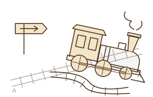
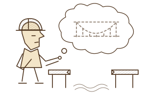
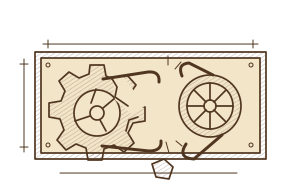
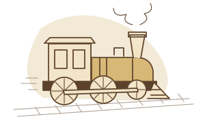
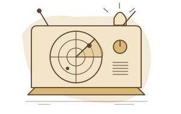
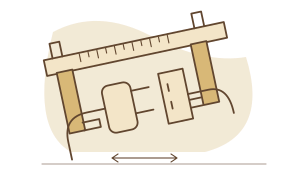

Available while building
Your coding tool can ask BOS to review the project, plan tests and check that the app’s BOS setup is still correct.
With great power comes a greater need for responsibility.
BOS helps keep AI responsible as it builds.



Less time explaining the project again. Earlier notice of risky changes. A clearer answer to “did the fix work?” Open a capability for an example and its current availability.

Keep Your Build on TrackA small request can accidentally turn into a bigger change. BOS helps check that the AI stays within what you agreed.See an example and availabilityBOS compares proposed changes with your app’s purpose, requirements and previous decisions. It can flag changes to rules or data that you did not ask for.
For example: You ask for a simpler booking screen. The AI also proposes changing cancellation rules. BOS can flag that extra change before you proceed.
You receive: The mismatch, why it matters and a suggested next step.
Standard: basic review and safety checks. Plus: saved history and deeper checks against earlier decisions. What can run depends on your coding tool and setup.
BOS uses saved project records to help your coding AI pick up the work. It checks what those records actually say instead of relying on the previous conversation.
For example: Come back next week and see why a particular save method was chosen, what passed testing and what still needs doing.
You receive: A clear starting point, relevant decisions and the next unfinished task.
Plus: lasting project history. Basic project documents are part of setup. Pro’s planned ability to sync and restore across computers still needs verification.

Early Warning SystemSpot signs that your AI build is going off track, such as conflicting changes, forgotten requirements or fixes that haven’t been tested.See an example and availabilityBOS helps identify problems while you build and explains why they matter. A warning may suggest checking a result, investigating a conflict or pausing a risky change.
For example: The AI says saving is fixed, but nobody has checked whether the information survives reopening the app. BOS keeps that missing check visible.
You receive: A clear warning, what prompted it and a suggested next step.
All tiers: basic safety warnings. Pro: advanced warnings and checks have passed local tests; delivery in each coding tool and effectiveness in real builds are still being tested. BOS cannot predict every failure.
BOS helps turn a reported problem into a focused repair and test plan. Your coding tool runs the checks it supports; BOS helps keep the results and remaining gaps clear.
For example: After repairing saving, test reopening the app, invalid entries and a related screen to check that the change did not break something else.
You receive: What changed, what passed, what failed and what still needs checking in the running app.
Standard: basic test guidance and checks where the required tools are installed. Plus: retained test history. Pro: help coordinating more complex checks.

Check Platform FitFind features that may need a different approach on your chosen platform before spending time building them.See an example and availabilityBOS helps identify platform limits and the device tests needed to confirm support. It can suggest a different design or a fallback when the original approach is unsuitable.
For example: Before building phone notifications, check whether they can work when the screen is locked—and test that behaviour on an actual phone.
You receive: The relevant limitation, what needs testing and a practical next step.
Standard: basic platform guidance. Pro: deeper planning across coding tools and assessment of a move to another platform. Support must be checked for your actual app and devices.
A reviewer checks whether a lesson is suitable to share without private project material. Another app receives it only when relevant and must still test its own result.
For example: A retry caused duplicate actions in another app. A reviewed lesson can help you check whether your app has the same risk.
You receive: A relevant lesson, when it applies and the checks needed before relying on it.
Pro: in active testing; each app needs the appropriate setup. Shared lessons exclude raw source code, private conversations and customer data.
A person supervises the review and decides what happens next. The aim is to surface concerns that one perspective might miss.
For example: review a complex change from security, usability and testing perspectives before building it.
You receive: additional perspectives, concerns and suggested checks.
Pro: being tested in Codex with human supervision. Equivalent specialist workflows have not yet been verified in Base44 or Claude Code.
Examples illustrate how BOS is intended to help; they are not claims that those particular apps have been tested. Feature delivery depends on your tier, installed components and development environment.
Beta users have free access until beta ends. Try the BOS capabilities verified for your project. Your coding platform, hosting and AI usage remain separate.
After beta, the approved direction is a generous introduction, followed by optional passes or membership for active assistance. When active access ends, there are seven days to finish already-started workflows, then stabilisation-only access. Standard pricing is set below. Usage allowances and the beta end date will be announced before paid access begins.
| Stage | What it means | Price and availability |
|---|---|---|
| Generous start | Useful help across several sessions, including returning to your project. See the allowance and next options from the beginning. | Included introduction · allowance to be confirmed |
| Keep your continuity | After the seven-day wind-down, active governance stops. Installed stabilisation and readable/exportable decisions, intentions and completed reviews remain. | Stabilisation stays · cloud retention terms to be confirmed |
| Standard pass | A bounded stretch of active help when you are building. A one-off purchase with no automatic renewal. | A$15 · 7 days from activation · usage allowance to be confirmed |
| Standard subscription | An optional recurring allowance for regular builders across supported environments, with terms shown before purchase. | A$29/month · usage allowance to be confirmed |
A gradual handover. See your options before the starter allowance ends. A seven-day wind-down lets you finish already-started bounded workflows; it does not start new active work. Existing project records remain readable and exportable under the published retention terms.
BOS will show verified contributions separately from estimates. Payment will not depend on an invented savings figure or a trust score. Self-service guidance and structured plugin-defect reporting are included; personal support is not.
Post-beta transitions and usage meters are not active. No automatic paid conversion or checkout is enabled. Current server access checks and existing account commitments remain in place. Read the access and billing draft.
The tiers below describe capability depth, not the new pass or membership prices. Your actual access depends on verified entitlement, installed components and platform readiness. Retaining existing project records is part of the planned continuity model above.
Public release pending. Access is by invitation. A tier describes the help you may access; it does not mean every capability is ready in every coding tool. Check the availability below. See free beta and planned access options. Self-service checkout is not live.
| Tier | What it helps you do | When it becomes useful |
|---|---|---|
| StandardAvailable in private beta | Guidance for the task. Understand your app, spot gaps, review risky changes and decide what to build and test next. Explore Standard | “Before changing login, show what could break and how we will check the fix.” |
| PlusAvailable in private beta | Continuity across the project. Remember decisions and unfinished work, keep test history, check changes against the project plan and prepare for recovery. Explore Plus | “Resume the app next week, keep our decisions in view and show what remains unfinished.” |
| ProIn active testing | Help with complex development. Get specialist AI perspectives, plan work across coding tools, learn from reviewed fixes and assess difficult repairs or platform moves. Explore Pro | “Plan a complex change, flag developing risks, get specialist review and apply relevant verified lessons.” |
| EnterprisePlanned | Planned oversight across teams. Help teams follow shared rules, organise reviews and see which projects still need checks before release, as these planned features become available. Explore Enterprise | “Show which projects meet our release policy, what proof is missing and who can review it.” |
On a small screen, scroll the table sideways. Open a tier below for its detailed scope.
Describe the app, find gaps, prepare a project brief and turn the next task into focused instructions for your coding AI. Agree how the result will be tested before calling it complete.
Get guidance on design, usability, security, platform limits and code structure. Your installed tools determine which checks can run. Basic checks of the target app, access and test results apply at every tier.
You can use BOS manually on different projects. Standard does not include long-term cloud history, automatic coordination of scans or lessons drawn across projects.
Keep requirements, accepted decisions, unfinished work, changes and test results across sessions and projects. Saved preferences help BOS explain things in the way you need.
Deeper checks look for conflicting records, missed setup or review steps, and changes that depart from approved decisions. Reports show progress and gaps in how the project is being managed.
Recovery planning and backups of BOS project records require additional setup. Remembering a project does not back up its database or restore it on another computer. Plus does not include continuous work without human supervision.
Get specialist AI perspectives, plan work across available coding tools and use advanced warnings and checks during a build. Current specialist work is supervised by a person.
Use reviewed lessons from verified repairs, with private information excluded. Assess what ties an app to its platform, plan a move or investigate a broken app.
Pro’s scope also includes syncing and restoring project records across computers, dashboards, timelines, automatic suggestions for scans and scheduled snapshots. These are not all delivered by the current public plugin. Rebuilding project memory from saved records is being tested locally. Restore across computers, work without supervision and equivalent support in each coding tool still need verification.
Planned features include shared project rules, reviewer permissions, review history, team administration, reporting across projects and private integrations.
The current plugin can help plan checks against company policies. It does not enforce those policies across an organisation or certify compliance. These broader features still need to be built and verified. Project reporting is separate from scoring individual developers.
No. BOS checks your access, the features supported by your coding tool and the setup of the specific project. A capability included in your tier may still be in testing or unavailable in your tool.
There is one public plugin. Changing tiers does not require reinstalling the plugin or your project’s BOS setup. A recommendation to upgrade does not change your access. No tier grants permission to change or publish an app automatically.
Platform subscriptions, hosting and model usage remain separate. The setup guides will provide public installation destinations when released.
Your coding tool edits the app and runs tests. BOS helps it use the project’s decisions and choose the right checks. Here is what is available, what needs setup and what still needs testing.
Local features need local installation. The Codex and Claude Code columns assume a project with the appropriate BOS Local Development Pack installed and activated. Connecting the public plugin alone does not install these components. Base44 here means its native AI app builder.
| What you want to do | Base44 BuildAI | Codex + Cloud BOS | Claude Code + Cloud BOS |
|---|---|---|---|
| Connect BOS | Needs an account connection and a skill in the selected workspace. Complete setup in the native Base44 builder is still being verified in the beta. | The plugin connection has been tested in a separate beta setup. Public installation is not open yet. | The plugin connection has been tested in a separate beta setup. Public installation is not open yet. |
| Keep the build on track | Uses the app’s requirements, planned work and saved BOS documents. Setup must be checked for each app. | Uses local project records and code inspection to check work against agreed decisions. | Uses local project records and shared BOS components. Each workflow still needs its own Claude Code test. |
| Pick up previous work | Existing app documents help preserve context. The newer feature for rebuilding project memory is not yet built for native Base44. | Rebuilding memory from saved records has been tested in fresh sessions and another app. Restoring across coding tools is not yet verified. | The shared memory component is implemented. Its use in a real Claude Code session has not yet been verified. |
| Check the fix | BuildAI and approved app connections carry out supported checks. The running app and phone behaviour still need testing. | Installed test tools can check app logic and user journeys. Advanced warning and verification features have passed local tests. | Claude Code can use its installed test tools. Not every BOS checking workflow has been verified here. |
| Get expert AI review | BOS can help plan a review. It does not yet organise the local specialist AI workflow inside BuildAI. | Being tested with a person supervising. Specialist AI reviewers contribute perspectives; the person decides what happens next. | Equivalent specialist AI workflows have not yet been verified in Claude Code. |
| Learn from proven fixes | Needs additional setup for each app and verified results that are safe to share. | Local tools can collect and review lessons. Sharing and successfully using them must still be verified for each connected app. | Collecting, reviewing, finding and successfully using lessons still need to be verified in Claude Code. |
Scroll sideways to compare all three environments on a smaller screen. “Tested” applies to the named setup or component, not every feature or app.
Guidance: BOS suggests work and checks; your coding tool carries them out. Local installation: additional BOS components in your project can inspect files or run supported checks. Not yet verified: we have not established that the particular feature works in that coding tool.
A Base44 app edited through a linked code repository uses the Codex or Claude Code setup for that work. Changes still need checking in the running Base44 app. Claude Code includes its VS Code extension; ordinary Claude web chat is outside these guides.
Some security and performance checks have been tested on specific Base44 apps. That does not establish support for all apps or other coding tools. Enterprise team features remain planned.
Find help for the build itself, or features BOS can help you add to an app. Minimum tier and availability are shown separately; inclusion is not a promise of immediate delivery.
Read the status before planning a build. Some guidance can be used before a complete, reusable installation is ready. A minimum tier describes access, not readiness in your app.
Available in private beta: invited testers only, with the stated limits. In active testing: still being proven. Being prepared: the reusable installation is not ready. Future exploration: an idea to investigate, with no delivery promise. Not currently available: cannot be installed now.
| Capability | How it helps | Minimum tier | Availability |
|---|---|---|---|
| Reliable App Logic | Check complicated rules, such as recurring dates, timing and redirects, to help prevent unexpected behaviour. | Standard | Being prepared |
| App and User Journey Checks | Plan checks of important tasks, such as signing in, saving and completing a booking, and record what actually passed. | Standard | Being prepared |
| Clear, Consistent App Design | Help make screens easier to understand, navigation more predictable and mobile layouts easier to use. | Standard | Being prepared |
| Security and Access Checks | Identify where information or actions need protection, and define tests showing that access restrictions work. | Standard | Being prepared |
| Ready-to-Launch Review | Find missing checks, support arrangements, privacy information and recovery plans before release. | Standard | Being prepared |
| Project Decisions and Change Control | Keep agreed requirements and decisions visible so later AI changes can be checked against them. | Plus | Being prepared |
| Backup and Recovery Planning | Identify what needs backing up and how you would test recovery before relying on it. | Plus | Being prepared |
| Build Progress and Test History | Keep a clear record of what changed, what was checked and what the next developer or AI session needs to know. | Plus | Being prepared |
| Expert AI Review and Teamwork | Organise specialist AI contributions to a difficult task, with clear responsibilities and human oversight. | Pro | In active testing |
| Moving to Another Platform | Identify what ties your app to its current platform and plan a staged move. | Pro | Being prepared Assessment guidance exists; a complete installation is still being prepared. |
| Broken App Diagnosis and Repair Planning | Work through what failed, identify a focused repair and define how to check the result. | Pro | Being prepared |
| Capability | How it helps | Minimum tier | Availability |
|---|---|---|---|
| Alerts and Notifications | Help plan and add useful alerts, including checks of what phone notifications can actually do. | Plus | Available in private beta Phone behaviour in the background and with a locked screen has only been partly verified. |
| Installable Web Apps | Plan home-screen installation, offline behaviour and updates for a web app. | Plus | Future exploration |
| AI Features for Your App | Help plan how your app connects to AI models and how that choice could change later. | Plus | Future exploration |
| Paid Plans and Feature Access | Help connect your app’s billing arrangements to the features each customer can use. | Plus | Not currently available |
| First-Time User Setup | Help new users understand the app, complete setup and make informed permission choices. | Plus | Future exploration |
| Understand How Your App Is Used | Plan useful measurements of app activity while limiting the collection of private information. | Pro | Future exploration |
Get a free app scan, sign in to your workspace or explore access to the BOS beta.
Account access and project onboarding are handled in the portal. Plugin beta access remains invitation-only.
BOS Portal - get a free scan of your app.Cloud BOS works with your coding tool while you build. Your published app should keep working when Cloud BOS is disconnected.
Your coding tool can ask BOS to review the project, plan tests and check that the app’s BOS setup is still correct.
Base44 uses an account connection and a skill per selected workspace. Codex and Claude Code use a plugin. Each project has its own approved setup.
The public connection does not install private BOS source, secrets or full private project memory. Read the data-sharing summary.